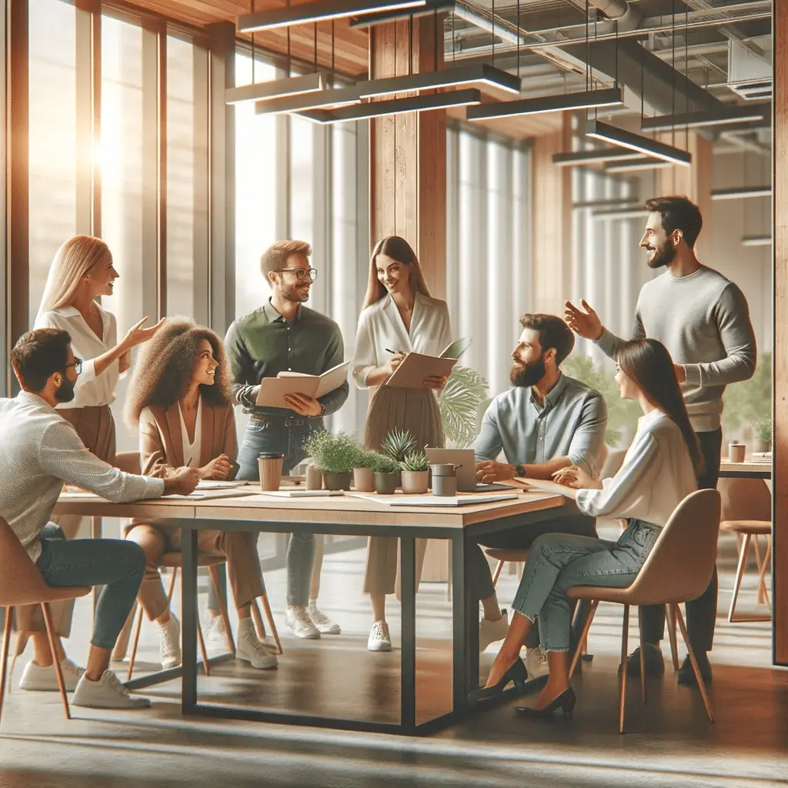

Poznaj nas
- Sześcioro stałych współpracowników
- Ponad 200 opublikowanych tekstów
- Każdy artykuł z listą źródeł
- Wydanie co miesiąc, od 2023 roku
O redakcji CuriositiesMagazine
Jesteśmy małym zespołem, który od 2023 roku tłumaczy zawiłe zjawiska na język zrozumiały bez przypisów. Każdy tekst przechodzi weryfikację źródeł.
Kim jesteśmy
CuriositiesMagazine powstał w 2023 roku z prostego założenia: ciekawostka przestaje być ciekawa, gdy okazuje się nieprawdziwa. Zaczynaliśmy jako newsletter dla kilkudziesięciu osób, dziś wydajemy miesięcznik liczący dwadzieścia stron.
Zespół to sześcioro stałych współpracowników — fizyczka, historyk, biolożka, dwoje redaktorów prowadzących i korektorka. Tematy wybieramy na kolegium raz w miesiącu. Do wydania trafia tylko materiał, który da się oprzeć na recenzowanej publikacji lub źródle archiwalnym.
Nie przyjmujemy tekstów sponsorowanych. Gdy popełnimy błąd, sprostowanie publikujemy w kolejnym numerze i oznaczamy je w wersji cyfrowej.
Skontaktuj się z redakcją